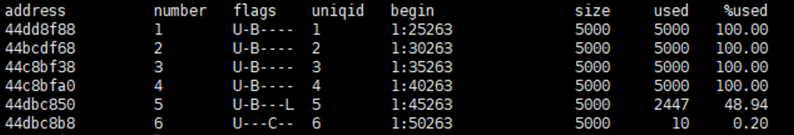

Symptoms
- The "A user fails to back up database data" message is displayed when Informix/GBase 8s executes a backup job.
- The "Failed To Execute A Data Restoration Task" message is displayed when Informix/GBase 8s executes a restoration job.
Possible Cause
The log storage space of the database is used up. As a result, database commands cannot be executed, affecting services.
Procedure
- Log in to the Informix/GBase 8s host.
- For an Informix database, run the su - informix command to switch to the Informix database user. For the GBase 8s database, run the su - gbasedbt command to switch to the GBase 8s database user.
- Run the onstat -l command to check the database status.

- Run the onbar -b -l -c command to clear the log space.

For an active/standby cluster, clear the log space on both the active and standby nodes.
- Perform the backup or restoration job again.
Suggestion
None.
Reference
None.